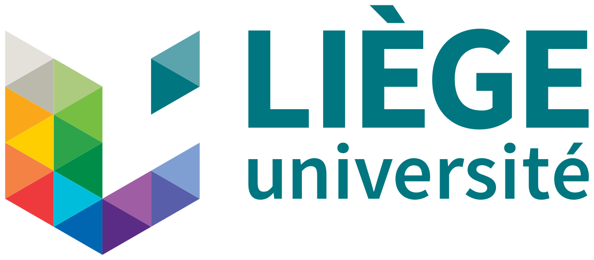

Registration & welcome

The first Gmsh User Meeting will take place on 8–9 July 2026 in Liège, Belgium. The two-day event will bring together researchers, engineers, and developers from around the world to share their experiences with Gmsh, discover recent developments, and discuss future directions for open-source mesh generation and numerical simulation.
To register please complete the online form:
Upon arrival at the user meeting, each participant will receive an official receipt from the University of Liège for the registration fee paid, together with a certificate of attendance.
The Gmsh User Meeting will be held at the Amphitheatres of Europe (Google Maps), on the Sart Tilman Campus of the University of Liège in Belgium. The campus can be reached by public transport (e.g. from the Liège-Guillemins train station or the city center), by car and by bike.
Several hotels are available in the centre of Liège, which is connected to the Sart Tilman campus by regular bus service (approximately 30 minutes). Options range from budget-friendly to upscale, particularly around the Liège-Guillemins train station and the city centre. Apartments and rooms can also be found on Airbnb throughout the city. We recommend booking early, as July is a popular period for visiting Liège.
